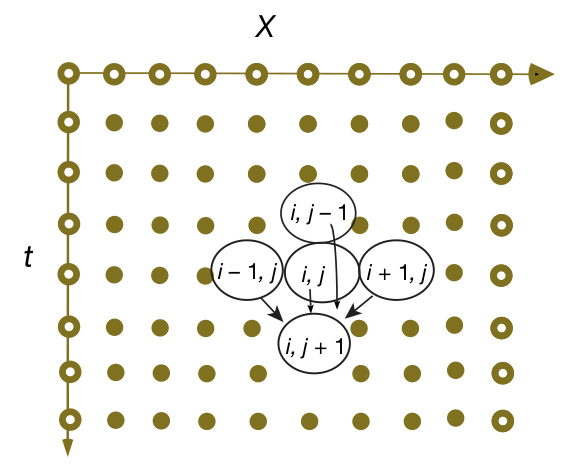
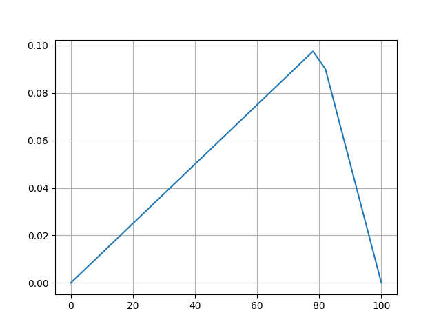
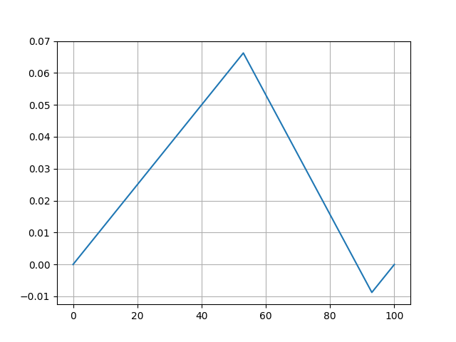
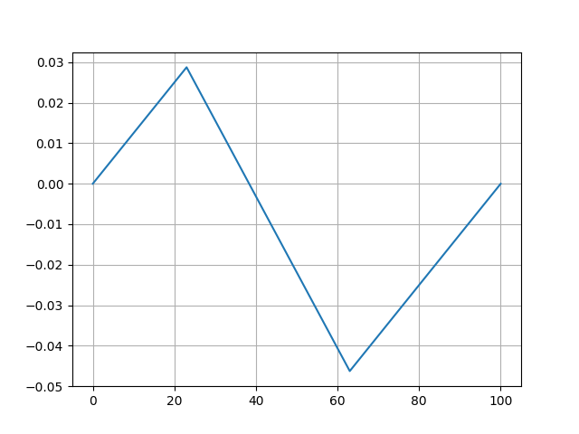
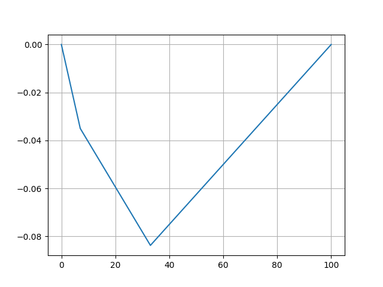

Dalga Denklemi (Wave Equation)
Denklem [1],
$$ \frac{\partial^2 y}{\partial x^2} = \frac{1}{c^2}\frac{\partial^2 y}{\partial t^2} $$
Denkleme yakından bakarsak onun bir kısmı türevsel denklem (PDE) olduğunu görürüz. İki tane bağımsız değişken temel alınıyor, $x,t$. Ayrıca denklem 2. derece, çünkü ikinci türevi içeriyor. Bu bilgiler denklemi çözmek için önemli [2].
Çözümde bir başlangıç şartı gerekli çünkü diferansiyel denklemleri "entegre ederken" daha doğrusu ileri doğru geçen zamanda hesaplarken bir başlangıç noktası gerekiyor, bunun için bir teli kaldırıp (geçici bir süre üçgen haline getirip) oradan bıraktığımızı düşünebiliriz, ki bu üçgen şekli alttaki gibi modellenebilir,
$$ y(x,t=0)=\begin{cases} 1.25 x/L , &x\leq 0.8 L ,\\ (5-5x/L), &x> 0.8 L, \end{cases} $$
İkinci bir başlangıç şartı daha lazım, 2. derece başlangıç şartı bu. Teli, ipi gerip üçgen yaptım ama sonra durup tekrar bıraktım, bu da bir başlangıç şartı, durağan durumdan başlama şartı.
$$ \frac{\partial y} {\partial t}(x,t=0) =0 $$
Çözüme bu şartlarla başlayabilirdik ama baştaki problem tanımını hatırlarsak ek bazı şartlar daha koymuştuk, bu şartlar, kısıtlamalar her an için geçerli, ipler iki ucundan (hareket etmeyen) duvarlara bağlı.
$$ y(0,t) \equiv 0, \quad y(L,t) \equiv 0 $$
[analitik çözüm atlandı]
Yaklaşıksal hesap için $x,t$ eksenleri düşünebiliriz, ve bu eksenlerde sadece belli noktalardaki hesaplar yapılacak, $x$ için aralıklar $\Delta x$ genişliğinde, $t$ için $\Delta t$ genişliğinde, aralık büyüklüğünü biz tanımlayacağız. Yani hesap noktaları $i=1,2,3,...$ için $i \Delta t$'de, $x$ için $j=1,2,..$ ile $j \Delta t$'de.

Yaklaşıksallıkta bir diğer kullanılacak teknik merkezi farklılıklar, burada $x$ için sola/sağa, $t$ için yukarı/aşağı olacak şekilde iki Taylor açılımı yapıyoruz,
$$ y(x +\Delta x, t) = y(x,t) + \frac{\partial U}{\partial x}\Delta x + \frac{1}{2} \frac{\partial^2 U}{\partial x^2}(\Delta x)^2 + \cdots $$
$$ y(x -\Delta x, t) = y(x,t) - \frac{\partial U}{\partial x} \Delta x + \frac{1} {2} \frac{\partial^2 U}{\partial x^2} (\Delta x)^2 - \cdots $$
$$ y(x, y +\Delta t) = y(x,t) + \frac{\partial U}{\partial t}\Delta y + \frac{1}{2} \frac{\partial^2 U}{\partial t^2}(\Delta t)^2 + \cdots $$
$$ y(x, y -\Delta t) = y(x,t) - \frac{\partial U}{\partial t} \Delta t + \frac{1} {2} \frac{\partial^2 U}{\partial t^2} (\Delta t)^2 - \cdots $$
Noktalı yerlerdeki terimleri yok sayıyoruz (2. derece yaklaşıklama yapmış olduk yani, bu önemli, yaklaşık temsilin kuvvetini gösteriyor bir anlamda), sonra her değişkenin iki açılımını birbiri ile topluyoruz. Toplama sonrası tek sayı terimlerinin iptal olduğunu görürüz, ve kalanlar,
$$ \frac{\partial^2 y(x,t)}{\partial x^2} \simeq \frac{y(x+\Delta x,t)+y(x-\Delta x,t)-2 y(x,t)}{(\Delta x)^2} $$
$$ \frac{\partial^2 y(x,t)}{\partial t^2} \simeq \frac{y(x,t+\Delta t) +y(x, y-\Delta t)-2 y(x,t)}{(\Delta t)^2} $$
olacaktır. İndisler üzerinden belirtirsek,
$$ \frac{\partial^2 y }{\partial t^2} \simeq \frac{y_{i,j+1}+y_{i,j-1}-2 y_{i,j}}{(\Delta t)^2}, \quad \frac{\partial^2 y}{\partial x^2} \simeq \frac{y_{i+1,j}+y_{i-1,j}-2 y_{i,j}} {(\Delta x)^2}. $$
Üstteki formülleri dalga denklemindeki yerlerine koyarsak,
$$ \frac{y_{i,j+1}+y_{i,j-1}-2 y_{i,j}} {c^2 (\Delta t)^2} = \frac{y_{i+1,j}+y_{i-1,j}-2 y_{i,j}} {(\Delta x)^2} \qquad (2) $$
Tabii dikkat edersek geçmiş $j-1$ ve gelecek $j+1$ birbirine karışmış durumda, bize lazım olan geleceğin hesabının eşitliğin sol tarafında olması geri kalan her şey sağda olacak şekilde tekrar düzenlersek,
$$ y_{i,j+1} = 2 y_{i,j}-y_{i,j-1}+ \frac{c^2 } {c'^{2}} \left [ y_{i+1,j}+y_{i-1,j}-2 y_{i,j}\right], \quad c' { = } \frac {\Delta x}{\Delta t} \qquad (1) $$
Hesap için üstteki resmi hatırlayalım, $i,j+1$ hücresine dört diğer hücreden ok çizilmiş, aslında bu oklar üstteki formülün hesabını anlatıyor, o anki $t$ zamanından üç hesap ve geçmişten $i,j-1$ hesabına bakarak gelecekteki değeri hesaplıyoruz. Bu hesaplama çok verimli olacak çünkü herhangi bir anda hafızada tutulması gereken $y(i,j)$ haricinde sadece üç tane değer var.
Son bir problem başlangıç anı ile alakalı, resimdeki bilinmesi gereken o üç hücrenin başlangıç $j=1$ anında olduğunu düşünürsek, ve $j=2$'yi hesaplamamız gerekiyor, eksi zamana doğru bir gidişat lazım, yani $j=-1$ zamanı. Başlangıç bilgisi $j=1$ var, ama $j=-1$ yok. Buradaki bilgiyi nasıl alacağız?
Denklemsel olarak bir ek koşul daha ekleyerek, ilk başta hem teli çekip üçgen haline getirmiştik, bir de başlangıç anında telin hızı sıfırdır diyeceğiz. Bu mantıksız değil, tel çekildi, tutuluyor.. hareket yok. Denklem olarak $\partial y / \partial t(x,0)$ sıfır diyeceğiz. Sonra bu denklemin merkezi farklılık açılımını yapacağız ve oradan gelen eşitlikleri ana (1)'e sokarak sadece $j=2$ için özel bir formül elde etmeyi umuyoruz.
$$ \frac{\partial y}{\partial t}(x,0) \simeq \frac{y(x, \Delta t)- y(x, -\Delta t)}{2\Delta t}=0, \ \Rightarrow \ y_{i, 0} = y_{i,2} $$
(1)'e sokunca
$$ y_{i,2} = y_{i,1}+ \frac{c^2} {c'^2} \left [ y_{i+1,1}+y_{i-1,1}-2 y_{i,1}\right] $$
Dikkat bu denklem sadece $j=2$ için. Bundan sonraki her $j$ için ana (1) formülü işleyecektir.
Stabilite, von Neumann
Çözümün stabil olması için $c \le \frac{\Delta x}{\Delta t}$ şartının doğru olması gerekir, ve çoğunlukla $\Delta x$ bizim kontrolümüzde olmaz, problemin dayattığı bir büyüklük olur, $c$ fiziki modelin bir parçasıdır, o zaman $\Delta t$'nin diğer verili parametrelere göre şarta uygun seçilmesi gerekir. Şarta von Neumann ya da Courant stabilite şartı ismi veriliyor.
Türetmek için alttaki gibi bir yaklaşım [3] kullanılabilir. Fakat ilerlemeden önce Euler denkleminden türetilen bazı ek formülleri görelim, bu formüller birazdan işimize yarayacak. Euler formülü hatırlarsak,
$$ e^{ix} = \cos (x) + i\sin(x) $$
Üstteki formülü $-x$ için yazarsak,
$$ e^{-ix} = \cos (-x) + i\sin(-x) $$
olur. Kosinüs'ün simetrik davranışı, yani $\cos(-x)=\cos(x)$ ve $-\sin(x)=\sin(-x)$ olması sebebiyle, üstteki
$$ = \cos(x) - i\sin(x) $$
olarak yazılabilir. Şimdi eğer $e^{ix}$ ve $e^{-ix}$'i toplarsak, önceden gördüğümüz açılımlar üzerinden,
$ e^{ix} + e^{-ix} = 2\cos(x) $
olur, çünkü eksi işaretli $\sin$ artı olanla beraber iptal olur. Tekrar düzenlersek,
$$ \cos(x) = \frac{1}{2} (e^{ix} + e^{-ix}) \qquad (3) $$
Benzer bir eşitliği $e^{ix} - e^{-ix}$ üzerinden elde edebiliriz,
$$ e^{ix} - e^{-ix} = 2i\sin(x) $$
Tekrar düzenleyince aynen biraz önce bir $\cos$ tanımı elde ettiğimiz gibi bir de $\sin$ tanımı elde ederiz,
$$ \sin(x) = \frac{1}{2i} (e^{ix} - e^{-ix}) $$
Dalga kısmi denklemi ne idi?
$$ \partial_t^2 y(x,t) = c(x)^2 \partial_x^2 y(x,t) $$
[2] notasyonu $c$ yerine $c(x)$ kullanmış. Şimdi stabilite şartını türetmek için çözümün basit bir düzlem dalgası (plane wave) olduğunu farz edeceğiz [1], yani çözüm
$$ y(x,t) = e^{i(kx-\omega t)} $$
formunda olacak. Bu formu ayrıksallaştırıp kısmı türevsel forma sokunca çıkan eşitlikler üzerinden bir stabilite şartı elde etmek amacımız. [3] notasyonu yerine [2]'imsi notasyon kullanacağız, yani $x,t$ indisleri $i,j$ yerine $j,n$, herhalde hayali sayı $i$ ile karışıklık olmasın diye böyle seçilmiş. O zaman $x \to j \Delta x$, $t \to n \Delta t$ olur.
Alttaki analitik soldaki formül ayrıksal şu hale gelir,
$$ y(x,t) = e^{i(kx - \omega t)} \to y_{j,n} = e^{i(kj\Delta x - \omega n \Delta t)} $$
Peki bu formülleri (2) bağlamında nasıl kullanacağız? Aslında bu çok basit.
Mesela $y_{j+1,n}$ için ayrıksal uzayda bir adım atmış oluyoruz, bu adımın basit dalga formülünde karşılığı
$$ y_{j+1,n} = e^{i ( k(j+1)\Delta x - \omega n \Delta t )} $$
Karışık gibi duruyor fakat $e$ bazlı işlem yapmanın faydasını göreceğiz şimdi,
$$ = e^{i k \Delta x} e^{i(k j \Delta x - \omega n \Delta t)} $$
Bir $e$ bazlı terimi dışarı çekmiş olduk. Geri kalan sağdaki $e$ bloğuna bakınca onun $y_{j,n}$ olduğunu görüyoruz! O zaman
$$ y_{j+1,n} = e^{i k \Delta x} y_{j,n} $$
Benzer bir işlemi $y_{j-1,n}$ için de gerçekleştirebiliriz,
$$ y_{j-1,n} = e^{-i k \Delta x} e^{i(k j \Delta x - \omega n \Delta t)} $$
$$ = e^{-i k \Delta x} y_{j,n} $$
Teknik ayrıksal zaman üzerinde de işliyor,
$$ y_{j,n+1} = e^{-i k \Delta t} y_{j,n} $$
$$ y_{j,n-1} = e^{i k \Delta t} y_{j,n} $$
O zaman bu öğeleri dalga denklemi (2)'ye sokabiliriz. O denklemi [2]'ye göre birazcık değiştirip tekrar verelim,
$$ \frac{y_{j,n+1} - 2 y_{j,n} + y_{j,n-1} }{\Delta t^2} = c_j^2 \left[ \frac{ y_{j+1,n} - 2 y_{j,n} + y_{j-1,n} }{\Delta x^2} \right] $$
Şimdi üstteki formülde sonlu ayrıksal terimleri, yani $y_{j,n+1}$, $y_{j,n-1}$, $y_{j+1,n}$, ve $y_{j-1,n}$ terimlerini, biraz önce bulduğumuz üstel terimlerle değiştirelim,
$$ e^{i(k j \Delta x - \omega n \Delta t)} \left[ \frac{ e^{i\omega \Delta t} - 2 + e^{-i\omega \Delta t} } {\Delta t^2}\right] = c^2 \left[ \frac{e^{ik\Delta x} - 2 + e^{-ik\Delta x}} {\Delta x^2} \right] e^{i(k j \Delta x - \omega n \Delta t)} $$
$c_j \to c$ geçişi her $j \Delta x$ noktasına göre tanımlanıyor muhakkak.
Devam edelim, son formülde basitleştirme yapılabilir, en sol ve sağdaki terimler iptal olabilir,
$$ \left[ \frac{ e^{i\omega \Delta t} - 2 + e^{-i\omega \Delta t} } {\Delta t^2}\right] = c^2 \left[ \frac{e^{ik\Delta x} - 2 + e^{-ik\Delta x}} {\Delta x^2} \right] $$
Geri kalanları tekrar düzenleyelim,
$$ e^{i\omega \Delta t} + e^{-i\omega \Delta t} - 2 = c^2 \frac{\Delta t^2}{\Delta x^2} [ e^{ik\Delta x} - e^{-ik\Delta x} - 2] $$
Hayali terimlerden kurtulmak istiyoruz tabii, bu noktada (3)'teki kosinüs tanımını tekrar hatırlayalım, onu kullanırsak, eşitliğin solundaki iki terim ve sağındaki iki terim için ayrı ayrı,
$$ 2 \cos(\omega \Delta t) - 2 = c^2 \frac{\Delta t^2}{\Delta x^2} (2 \cos(k\Delta x) - 2) $$
Herşeyi 2 ile bölelim,
$$ \cos(\omega \Delta t) - 1 = c^2 \frac{\Delta t^2}{\Delta x^2} (\cos(k\Delta x) - 1) \qquad (4) $$
Şimdi bir diğer trigonometrik eşitliği kullanacağız [4],
$$ 2\sin^2(x) = 1 - \cos (2x) $$
Biraz degistirirsek,
$$ \sin (x) = \sqrt{1 - \cos (2x)} $$
Ya da
$$ \sin (\frac{x}{2}) = \pm \sqrt{1 - \cos (x)} $$
Bu eşitliğin (4) ifadesini nasıl basitleştireceğini görmek zor değil,
$$ \sin^2(\omega \frac{\Delta t}{r}) = c^2 \frac{\Delta t^2}{\Delta x^2} \sin^2 (k \frac{\Delta x}{2} ) $$
Karelerden kurtulabiliriz,
$$ \sin(\omega \frac{\Delta t}{r}) = c \frac{\Delta t}{\Delta x} \sin (k \frac{\Delta x}{2} ) $$
İşte bu basit denklem sayısal analizin en temel bulgularından birine götürdü bizi.
Üstteki denklemin reel sonuçlara sahip olması için
$$ c \frac{\Delta t}{\Delta x} \le 1 $$
olmalıdır. Bu koşul artık ünlü olan Courant-Friedrichs-Lewy (CFL) koşulu, ya da kriteridir. Bu koşul iki tür hızın arasında bir ilişki kurar, biri fiziksel hız, ki fiziksel ortamda dalganın yayılma hızı bu, diğeri ise "algoritmik hız" bir anlamda, bizim tanımladığımız ızgaranın genişliği $\Delta x$ bölü yine bizim seçtiğimiz zaman aralığı $\Delta t$.
rho = 0.01;
ten = 40.;
c = np.sqrt(ten/rho)
c1 = c;
ratio = c*c/(c1*c1) # CFL kriteri = 1
# dongunun her adiminda sadece uc zaman dilimi yeterli, o sebeple
# xi [_,3] boyutunda.
xi = np.zeros((101,3), float)
k = range(0,101)
for i in range(0, 81):
xi[i, 0] = 0.00125*i
for i in range (81, 101):
xi[i, 0] = 0.1 - 0.005*(i - 80)
fig = plt.figure()
for i in range(1,100):
xi[i,1] = xi[i,0] + 0.5*ratio*(xi[i+1,0] + xi[i-1,0] -2*xi[i,0])
for j in range(100):
for i in range(1, 100):
xi[i,2] = 2.*xi[i,1]-xi[i,0]+ratio*(xi[i+1,1]+xi[i-1,1]-2*xi[i,1])
if j % 5 == 0:
plt.grid(True)
plt.xlim(0, 101)
plt.ylim(-0.15, 0.15)
plt.plot(k,xi[k,2])
plt.savefig('/tmp/string-%02d.png' % j)
plt.clf()
# bitti, 1,2 indisi yeni 0,1 olacak
for m in range (0,101):
xi[m, 0] = xi[m, 1]
xi[m, 1] = xi[m, 2]
 
 
! convert -loop 0 -delay 100 /tmp/string*.png string.gif
Animasyonlu sonucu [5]'te bulabiliriz.
Kaynaklar
[1] Bayramlı, Fizik, Isı ve Dalga Denklemleri
[2] Igel, Computers, Waves, Simulations, Coursera Lecture, Week 3, von Neumann Analysis, https://www.coursera.org/learn/computers-waves-simulations
[3] Landau, Landau Computational Physics Course, Video Lectures, https://www.youtube.com/playlist?list=PLnWQ_pnPVzmJnp794rQXIcwJIjwy7Nb2U
[4] Bayramlı, Diferansiyel Denklemler, Ekler, Trigonometri
[5] Bayramlı, Animasyon, https://raw.githubusercontent.com/burakbayramli/classnotes/master/compscieng/compscieng_app17wave/string.gif
{kind=link}
Yukarı